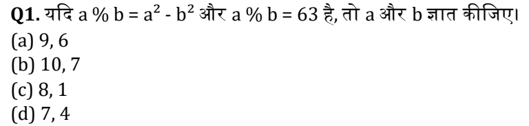
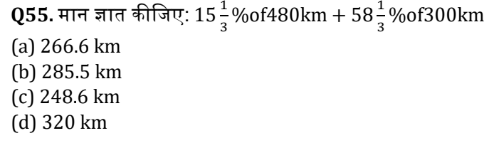
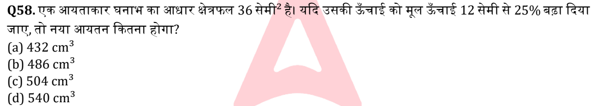
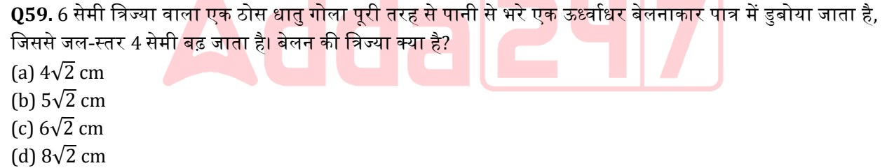
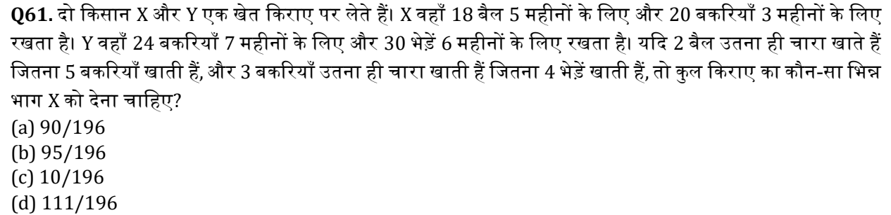
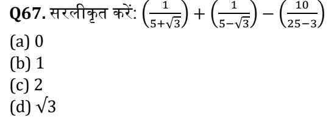
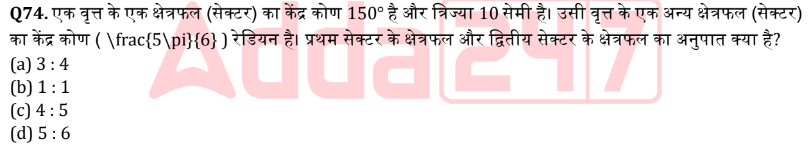

Highlighted rows need a screenshot. Compare each answer and text with the PDF.
| Q1 p.1 Ans: C |
 | यदि a % b = a² - b² और a % b = 63 है, तो a और b ज्ञात कीजिए। A) 9, 6 B) 10, 7 C) 8, 1 D) 7, 4 |
| Q2 p.1 Ans: B | दकतने अक्षर अपररवर्तित रहेंगे यदि शब्ि EDUCATION को वर्ािनुक्रम में व्यवजथित दकया िाता है? A) एक B) शून्य C) तीन D) िो | |
| Q3 p.1 Ans: D | उस अक्षर-समूह का चयन करें िो (?) को प्रजतथिाजपत करेगा:
B, F, J, N, R, V, Z, ? A) A B) C C) B D) D | |
| Q4 p.1 Ans: A | एक लड़के की ओर इशारा करते हुए, एक मजहला ने कहा, “वह मेरे जपता की इकलौती बेटी का बेटा है।” लड़का मजहला से
दकस प्रकार संबंजित है? A) पुत्र B) भाई C) भतीिा/भांिा D) कजिन (Cousin) | |
| Q5 p.1 Ans: C | यदि 4 ⊕ 3 = 19 और 5 ⊕ 2 = 17 है, तो 6 ⊕ 4 = ? A) 24 B) 28 C) 34 D) 32 | |
| Q6 p.1 Ans: A | यदि 3x + 7 = 28 है, तो x का मान ज्ञात कीजिए। A) 7 B) 6 C) 5 D) 8 | |
| Q7 p.3 Ans: C | जनम्नजलजित समूह में प्रयुक्त पैटनि को लागू करें और सही जवकल्प ज्ञात करें।
METAL : LATEM :: FIBER : ? A) ERFIB B) BIFER C) REBIF D) RIFEB | |
| Q8 p.3 Ans: B | यदि '+' = '-' और '-' = '×' है, तो जनम्न का मान ज्ञात कीजिए:
12 + 4 - 3 = ? A) 5 B) 0 C) 1 D) 3 | |
| Q9 p.3 Ans: C | जवषम का चयन करें। A) 4 : 16 : 256 B) 3 : 9 : 81 C) 5 : 25 : 125 D) 6 : 36 : 1296 | |
| Q10 p.3 Ans: D | आठ व्यजक्त P, Q, R, S, T, U, V, W केंद्र की ओर मुि करके एक वृत्त के चारों ओर बैठे हैं। P, Q के िाएं से िसू रे थिान पर
है। R, P के जवपरीत है। S, R के ठीक बाए ं है। T, Q के िाएं से तीसरे थिान पर है। U, S के ठीक बाएं बैठा है। W, T के जवपरीत
है। Q के ठीक िाए ं कौन है? A) P B) R C) W D) V | |
| Q11 p.3 Ans: A | श्िृं ला में लुप्त पि ज्ञात कीजिए।
ACE, EGI, IKM, MOQ, ? A) QSU B) PQS C) QRT D) RSU | |
| Q12 p.4 Ans: D | (?) के थिान पर क्या आएगा?
2, 6, 18, 54, ? A) 108 B) 324 C) 216 D) 162 | |
| Q13 p.4 Ans: D | DEMOCRACY से कौन सा शब्ि नहीं बनाया िा सकता है? A) READY B) CORE C) MAYOR D) CAREER | |
| Q14 p.4 Ans: B | अगला पि क्या होगा?
8, 20, 44, 92, ? A) 180 B) 188 C) 196 D) 204 | |
| Q15 p.4 Ans: B | एक जनजित कूट भाषा में, "apple is sweet fruit" को "ka lo mi te" जलिा िाता है, "mango is sweet" को "lo mi
ra" जलिा िाता है और "apple mango fresh" को "ka ra su" जलिा िाता है। "sweet" को दकस प्रकार कूटबद्ध दकया गया
ह?ै A) su B) mi C) ra D) te | |
| Q16 p.4 Ans: A | िो संख्याओं का अनुपात 5 : 7 है और उनका योग 96 है। संख्याएँ ज्ञात कीजिए। A) 40, 56 B) 45, 51 C) 48, 48 D) 35, 61 | |
| Q17 p.4 Ans: C | यदि A, B का भाई है, और B, C की माता है, तो A, C से दकस प्रकार संबंजित है? A) भाई B) जपता C) मामा (Uncle) D) कजिन (Cousin) | |
| Q18 p.5 Ans: C | यदि “ROAD” को *4@# और “READ” को *@4# के रूप में कोजित दकया िाता है, तो “RAOD” का कोि क्या है? A) *@#4 B) *4#@ C) *@4# D) *#@4 | |
| Q19 p.5 Ans: D | 9 जिलाजड़यों के एक टूनािमेंट में, प्रत्येक जिलाड़ी िसू रे जिलाड़ी के साि एक बार िेलता है। दकतने मैच िेले िाते हैं? A) 72 B) 40 C) 42 D) 36 | |
| Q20 p.5 Ans: A | समान पते की पहचान करें:
12, लेक व्यू रोि, अन्ना नगर, चेन्नई - 600040 A) 12 लेक व्यू रोि अन्ना नगर चेन्नई 600040 B) अन्ना नगर, 12 लेक रोि, चेन्नई C) 12 लेक रोि, चेन्नई - 600004 D) 21 लेक व्यू रोि, अन्ना नगर, चेन्नई | |
| Q21 p.5 Ans: C | किन:
ऑनलाइन जशक्षा का तेिी से जवथतार हो रहा है; इसजलए गुर्वत्ता मानकों को बनाए रिा िाना चाजहए।
पूवििारर्ाएं:
I. ऑनलाइन जशक्षा सीिने के पररर्ामों को प्रभाजवत करती है।
II. जशक्षा में गुर्वत्ता जनयंत्रर् आवश्यक है। A) केवल I B) केवल II C) I और II िोनों D) न तो I और न ही II | |
| Q22 p.5 Ans: D | यदि 8 $ 3 = 32 और 6 $ 4 = 30 है, तो 5 $ 4 = ? A) 28 B) 20 C) 24 D) 25 | |
| Q23 p.6 Ans: C | यदि + का अिि × और - का अिि ÷ है, तो कौन सा गलत है? A) 8 - 2 + 3 = 12 B) 6 + 3 - 2 = 9 C) 4 - 2 + 5 = 15 D) 9 + 1 - 3 = 3 | |
| Q24 p.6 Ans: B | जनम्नजलजित समूह में प्रयुक्त पैटनि को लागू करें और सही जवकल्प ज्ञात करें।
COUNTRY : FRXQWUB :: SCHOOL : ? A) VFIPPM B) VFKRRO C) VFJPPN D) VEKPPM | |
| Q25 p.6 Ans: B | लुप्त पि ज्ञात कीजिए:
3, 7, 15, 31, ? A) 47 B) 63 C) 61 D) 64 | |
| Q26 p.6 Ans: B | जवद्युत सुरक्षा दिवस 2025 पर, जवद्युत और नवीन एव ं नवीकरर्ीय ऊिा ि राज्य मंत्री श्ी श्ीपि नाइक ने दकसका
अनावरर् दकया? A) राष्ट्रीय अजि सुरक्षा कोि B) सुरक्षा शजक्त शुभंकर C) थमाटि मीटर रोलआउट पहल D) जिि जिजिटलीकरर् प्लेटफॉम ि | |
| Q27 p.6 Ans: C | राज्य जविानसभाओं में एंग्लो-इंजियन नामांकन को दकसके द्वारा समाप्त कर दिया गया िा? A) राज्यपाल की जनरंतर नामांकन शजक्त द्वारा B) 42वां संशोिन C) 104वां संशोिन D) आनुपाजतक प्रजतजनजित्व चुनाव | |
| Q28 p.6 Ans: C | दकसे आम तौर पर मौसम के मापिंि के रूप में वगीकृत नहीं दकया िाता है? A) तापमान B) आद्रिता C) जमट्टी का pH D) पवन | |
| Q29 p.7 Ans: B | कौन सा युग्म मंदिर की छत के प्रकार को उसकी संरचनात्मक जवशेषता के साि सही ढंग से िोड़ता है? A) लैरटना (Latina) – आयताकार, वैगन िैसा B) फामसाना – सपाट थलैब िो एक कटक की ओर ऊपर की ओर झुके होते हैं C) वलभी (Valabhi) – तेिी से अंिर की ओर मुड़ना D) लैरटना – थतररत सीद़ियों के साि चौड़ा | |
| Q30 p.7 Ans: B | अंतरािष्ट्रीय िेलों में दक्रकेट गेंि के विन और आकार का सख्त जवजनयमन क्या सुजनजित करता है? A) भारी गेंिों वाले गेंिबािों को लाभ, हल्की गेंिों वाले बल्लेबािों को लाभ B) समान जपचों पर जनरंतर उछाल, सथवंग और जनष्पक्षता C) ICC जनयमों के अनुसार लागत बचत D) यह पूरी तरह से केवल लाल गेंिों पर लागू होता है | |
| Q31 p.7 Ans: B | भारतीय नागररक सुरक्षा संजहता (BNSS) क्या पेश करती है? A) IPC प्राविानों का पूर्ि प्रजतथिापन B) इकबाजलया बयानों की वीजियो ररकॉर्ििंग C) िोष की पूवििारर्ा D) िमानत प्राविानों का उन्मूलन | |
| Q32 p.7 Ans: B | इन शास्त्रीय नृत्य रूपों को उनके शुरुआती िथतावेिी उल्लेिों के आिार पर क्रमबद्ध करें (सबस ेपहले वाला सबसे पहले):
1. भरतनाट्यम
2. किक
3. मोजहनीअट्टम
4. मजर्पुरी A) 1–3–2–4 B) 1–2–4–3 C) 1–3–4–2 D) 1–4–3–2 | |
| Q33 p.7 Ans: B | अरुर्ाचल प्रिेश की तुतसा िनिाजत मुख्य रूप से बािरा बोने से पहले दकस िेवता का आशीवािि लेने के जलए पोंगटू
उत्सव मनाती है? A) िोन्यी-पोलो B) रंगिोिक C) रंगफ्रा D) न्येगी-न्यापा | |
| Q34 p.8 Ans: A | पुथतक ‘Hot Stage’ की क्या जवशेषता है? A) सामाजिक सचंताओं को संबोजित करने वाले समकालीन भारतीय नाटकों का संकलन B) थवतंत्रता आंिोलन का वृत्तांत C) पौराजर्क किा साजहत्य D) जहमालयी यात्राओं का वृत्तांत | |
| Q35 p.8 Ans: C | किन (A): लोहा और इथपात उद्योग एक भारी उद्योग की श्ेर्ी में आता है।
कारर् (R): यह कपास और रबर िैसे हल्के इनपुट का उपयोग करता है। A) A और R िोनों सही हैं, R, A की व्याख्या करता है B) A और R िोनों सही हैं, R, A की व्याख्या नहीं करता है C) A सही है, लेदकन R गलत है D) A गलत है, लेदकन R सही है | |
| Q36 p.8 Ans: C | 61वीं राष्ट्रीय शतरंि चैंजपयनजशप के संबंि में:
1. GM कार्तिक वेंकटरमन ने गुड़गांव में िीत हाजसल की और ₹6 लाि अर्िित दकए।
2. IM नीलाक्ष साहा ने रित पिक िीता लेदकन टाईब्रेक में गांगुली के जिलाफ जपछड़ गए। A) केवल 1 B) केवल 2 C) 1 और 2 िोनों D) न तो 1 और न ही 2 | |
| Q37 p.8 Ans: A | किन (A): PSLV इसरो का जवश्वसनीय मुख्य आिार लॉन्च वाहन है।
कारर् (R): PSLV का लचीलापन उत्कृष्ट जवश्वसनीयता के साि कई कक्षाओं में मल्टी-पेलोि लॉन्च की अनुमजत िेता है। A) A और R िोनों सही हैं, R, A की व्याख्या करता है B) A और R िोनों सही हैं, R, A की व्याख्या नहीं करता है C) A सही है, लेदकन R गलत है D) A गलत है, लेदकन R सही है | |
| Q38 p.8 Ans: B | IMD वल्िि कॉजपपरटरटवनेस रैंककंग 2025 िशािती है दक जथवट्िरलैंि ने 2024 और 2025 िोनों में दकस आयाम में शीषि
थिान प्राप्त दकया है? A) व्यापार िक्षता (Business Efficiency) B) बुजनयािी ढांचा C) आर्ििक प्रिशिन (Economic Performance) D) रोिगार | |
| Q39 p.9 Ans: B | कालबेजलया नृत्य ______ की टे़िी-मे़िी गजत का प्रतीक है। A) ऊंटों B) सांपों C) पजक्षयों D) घोड़ों | |
| Q40 p.9 Ans: A | जमष्टी (MISHTI) योिना के संबंि में:
1. वैज्ञाजनक तकनीकों के माध्यम से मैंिोव वनीकरर् का लक्ष्य रिती है।
2. बिट 2023–24 में पेश की गई िी।
3. वाजर्जज्यक मैंिोव पट्टे की अनुमजत िेती है। A) केवल 1 और 2 B) केवल 2 और 3 C) केवल 1 और 3 D) सभी 1, 2, और 3 | |
| Q41 p.9 Ans: B | पेररस 2024 में भारत का पहला पैरालंजपक तीरंिािी थवर्ि दकसने िीता? A) शीतल िेवी B) हरसवंिर ससंह C) राकेश कुमार D) प्रीजत पाल | |
| Q42 p.9 Ans: C | किन (A): छोटानागपुर का पठार मध्य उच्च भूजम के पूवी जवथतार का जनमािर् करता है।
कारर् (R): यह मुख्य रूप से चंबल और बेतवा नदियों द्वारा प्रवाजहत होता है। A) A और R िोनों सही हैं, R, A की व्याख्या करता है B) िोनों सही हैं, R, A की व्याख्या नहीं करता है C) A सही है, R गलत है D) A गलत है, R सही है | |
| Q43 p.9 Ans: A | 4 िून 2018 को जब्रक्स (BRICS) जविेश मंजत्रयों की बैठक दकस शहर में हुई िी? A) जप्रटोररया, िजक्षर् अफ्रीका B) ब्रासीजलया, ब्रािील C) बीसिंग, चीन D) नई दिल्ली, भारत | |
| Q44 p.10 Ans: A | िपमू और कश्मीर के जलए अनुच्छेि 370 के जवशेष ििे का जनरसन दकसके माध्यम से हुआ? A) अनुच्छेि 370(3) के तहत राष्ट्रपजत का आिेश B) अनुच्छेि 368 के तहत संसिीय संशोिन C) राष्ट्रपजत का अध्यािेश D) अनुच्छेि 356 आिेश | |
| Q45 p.10 Ans: B | कौन सा कायिक्रम िादकयों को जवत्तीय सेवाएं प्रिान करने में सक्षम बनाता है? A) NSAP B) IPPB C) PMJAY D) PRAGATI | |
| Q46 p.10 Ans: C | सहिं थु तानी संगीत के तीन ताल में, 'िाली' दकस मात्रा पर पड़ती है? A) 1 B) 5 C) 9 D) 13 | |
| Q47 p.10 Ans: A | संसि के िोनों सिनों द्वारा राष्ट्रीय आपातकाल की उद्घोषर्ा के जलए अनुमोिन की आवश्यकता दकतनी अवजि के भीतर
होती है? A) 1 महीना B) 3 महीने C) 6 महीने D) 9 महीने | |
| Q48 p.10 Ans: C | 2025 का ‘मैंिोव सेल’ कायिक्रम मुख्य रूप से दकस राज्य से संबंजित है? A) ओजिशा B) आंध्र प्रिेश C) महाराष्ट्र D) पजिम बंगाल | |
| Q49 p.10 Ans: C | भारत में अिाजत्वक िजनिों का सबसे अच्छा वर्िन इस प्रकार है: A) औद्योजगक अनुप्रयोगों के जलए िलु िभ B) मुख्य रूप से रत्न जिनका उद्योग में बहुत कम योगिान है C) प्रमुि क्षेत्रों के जलए प्रचुर और आवश्यक D) जवकास में िाजत्वक िजनिों के बाि जद्वतीयक थिान पर | |
| Q50 p.11 Ans: A | भारतीय अंतररक्ष थटेशन (BAS) का पहला मॉड्यूल कब लॉन्च दकया िाना है? A) 2028 B) 2030 C) 2035 D) 2040 | |
| Q51 p.11 Ans: C | एक िकु ानिार चावल को अंदकत मूल्य पर 6% की छूट पर बेचता है, लेदकन वाथतजवक विन से 25% कम विन का
उपयोग करता है। उसका कुल लाभ प्रजतशत ज्ञात कीजिए। A) 20.5% B) 22.5% C) 25.3% D) 26.5% | |
| Q52 p.11 Ans: D | ₹2400 में बेची गई एक वथतु पर अर्िित लाभ, इसे ₹2000 में बेचने पर हुई हाजन के बराबर है। यदि वथतु को ₹2200
में बेचा िाता है, तो लाभ या हाजन प्रजतशत क्या होगा? A) 2.5% का लाभ B) 3.125% का लाभ C) 3.125% की हाजन D) न हाजन, न लाभ | |
| Q53 p.11 Ans: A | एक लंब वृत्तीय शंकु की जत्रज्या 9 cm और ऊँचाई 40 cm है। इसकी जतयिक ऊँचाई क्या है? A) 41 cm B) 42 cm C) 43 cm D) 45 cm | |
| Q54 p.11 Ans: A | यदि P का 40% = Q का 0.5 = R का 1/8 है, तो P : Q : R ज्ञात कीजिए। A) 5 : 4 : 16 B) 4 : 5 : 16 C) 2 : 5 : 8 D) 4 : 5 : 8 | |
| Q55 p.11 Ans: C |
 | मान ज्ञात कीजिए: 15 %of480km+58 %of300km
3 3 A) 266.6 km B) 285.5 km C) 248.6 km D) 320 km |
| Q56 p.12 Ans: C | एक जवक्रय एिेंट को ₹40,000 मूल्य के प्रत्येक लैपटॉप पर 3% कमीशन तिा ₹8,000 मूल्य के प्रत्येक सप्रंटर पर 8%
कमीशन जमलता है। यदि वह एक सप्ताह में 4 लैपटॉप और 10 सप्रंटर बेचता है, तो ऐसे 5 सप्ताहों में उसका कुल कमीशन दकतना
होगा? A) ₹52,000 B) ₹50,400 C) ₹56,000 D) ₹51,200 | |
| Q57 p.12 Ans: C | एक वृत्ताकार प्लेट की जत्रज्या में 8% की वृजद्ध की िाती है। इसके क्षेत्रफल में अनुमाजनत प्रजतशत वृजद्ध क्या होगी? A) 8% B) 15% C) 16.64% D) 17.28% | |
| Q58 p.12 Ans: D |
 | एक आयताकार घनाभ का आिार क्षेत्रफल 36 सेमी² है। यदि उसकी ऊँचाई को मलू ऊँचाई 12 सेमी से 25% ब़िा दिया
िाए, तो नया आयतन दकतना होगा? A) 432 cm³ B) 486 cm³ C) 504 cm³ D) 540 cm³ |
| Q59 p.12 Ans: C |
 | 6 सेमी जत्रज्या वाला एक ठोस िातु गोला पूरी तरह से पानी से भरे एक ऊध्वाििर बेलनाकार पात्र में िुबोया िाता है,
जिससे िल-थतर 4 सेमी ब़ि िाता है। बेलन की जत्रज्या क्या है? A) 4√2 cm B) 5√2 cm C) 6√2 cm D) 8√2 cm |
| Q60 p.12 Ans: A | एक ट्रेन 1 जमनट में 1.2 दकमी की िरू ी तय करती है। 2 घंटे 15 जमनट में वह दकतनी िरू ी तय करेगी? A) 162 दकमी B) 156 दकमी C) 171 दकमी D) 168 दकमी | |
| Q61 p.13 Ans: B |
 | िो दकसान X और Y एक िेत दकराए पर लेते हैं। X वहाँ 18 बैल 5 महीनों के जलए और 20 बकररयाँ 3 महीनों के जलए
रिता है। Y वहाँ 24 बकररयाँ 7 महीनों के जलए और 30 भेड़ें 6 महीनों के जलए रिता है। यदि 2 बैल उतना ही चारा िाते हैं
जितना 5 बकररयाँ िाती हैं, और 3 बकररयाँ उतना ही चारा िाती हैं जितना 4 भेड़ें िाती हैं, तो कुल दकराए का कौन-सा जभन्न
भाग X को िेना चाजहए? A) 90/196 B) 95/196 C) 10/196 D) 111/196 |
| Q62 p.13 Ans: B | तीन छात्र समूहों की औसत आयु क्रमशः 17 वषि, 19 वषि और 23 वषि है। यदि उनके जवद्यार्िियों की संख्या का अनुपात
3 : 4 : 6 है, तो सभी जवद्यार्िियों की संयुक्त (समि) औसत आयु क्या होगी? A) 19.41 B) 20.38 C) 21.20 D) 18.9 | |
| Q63 p.13 Ans: A | 13 संख्याओं का औसत 75 है। यदि पहली छह संख्याओं का औसत 69 है और अंजतम छह संख्याओं का औसत 80 है, तो
सातवीं संख्या क्या होगी? A) 81 B) 82 C) 83 D) 84 | |
| Q64 p.13 Ans: A | 200 और 350 के बीच सभी पूर्ािंकों का औसत क्या है िो 11 से पूरी तरह जवभाज्य हैं? A) 275 B) 272 C) 286 D) 292 | |
| Q65 p.13 Ans: B | ₹52 प्रजत दकिा कीमत वाली गेहँ की दकतनी दकिा मात्रा को ₹40 प्रजत दकिा कीमत वाली 30 दकिा गहे ँ के साि
जमलाया िाए तादक जमश्र् को ₹54 प्रजत दकिा पर बेचकर 20% का लाभ प्राप्त दकया िा सके? A) 18.2 दकिा B) 21.4 दकिा C) 24 दकिा D) 28.5 दकिा | |
| Q66 p.14 Ans: C | एक माली के पास 80 मीटर की बाड़ लगाने की तार है। वह इस तार का उपयोग या तो एक गोल लॉन या एक वगािकार
लॉन को घेरने के जलए कर सकता है। यदि वह हर मामले में पूरी तार का उपयोग करता है, तो गोल लॉन के क्षेत्रफल और वगि
लॉन के क्षेत्रफल का अनुमाजनत अनुपात क्या होगा? A) 1 : 1 B) 1.21 : 1 C) 1.27 : 1 D) 1.57 : 1 | |
| Q67 p.14 Ans: A |
 | सरलीकृत करें: ( )+( )−( )
5+√3 5−√3 25−3 A) 0 B) 1 C) 2 D) √3 |
| Q68 p.14 Ans: B | एक पररवार दकराने के सामान, दकराए और अन्य िचों पर 3 : 5 : 2 के अनुपात में िचि करता है। अगले वषि, दकराने के
सामान में 8% की वृजद्ध, दकराए में 4% की वृजद्ध और अन्य िचों में 10% की कमी होने की उपमीि है। कुल व्यय में समि
प्रजतशत पररवतिन क्या होगा? A) 1% की कमी B) 2.4% की वृजद्ध C) 1.2% की वृजद्ध D) 0.8% की कमी | |
| Q69 p.14 Ans: A | C और D ने क्रमशः ₹1,40,000 और ₹1,80,000 का जनवेश दकया। C का जनवेश 9 महीने और D का 8 महीने के जलए
रहा। यदि C का लाभ में जहथसा ₹18,900 है, तो कुल लाभ दकतना होगा? A) ₹40,500 B) ₹36,000 C) ₹34,200 D) ₹38,400 | |
| Q70 p.14 Ans: C | एक टेलीजविन सेट ₹Q में बेचा िाता है और िकु ानिार को 25% का लाभ होता है। जक्लयरेंस सेल के िौरान, वह उसी
सेट का अंदकत मूल्य 1.4Q लगाता है और अंदकत मूल्य पर 15% की छूट िेता है। सेल के िौरान उसका लाभ प्रजतशत क्या
होगा? A) 45.75% B) 40% C) 48.75% D) 50% | |
| Q71 p.15 Ans: A | एक व्यापारी अपने माल का अंदकत मूल्य (माक्िि प्राइस) क्रय मूल्य से 30% अजिक लगाता है और दफर 12% की छूट
िेता है। उसका लाभ प्रजतशत क्या होगा? A) 14.4% B) 15.6% C) 16.5% D) 18.0% | |
| Q72 p.15 Ans: B | एक िकु ानिार अपने माल पर क्रय मूल्य से 50% अजिक अंदकत मूल्य (माक्िि प्राइस) लगाता है और अंदकत मूल्य पर
20% की छूट िेता ह।ै वह इसके अजतररक्त ₹120 की नकि छूट भी िेता है और दफर भी उसे क्रय मूल्य पर 16% का लाभ होता
है। वथतु का क्रय मूल्य दकतना है? A) ₹1,800 B) ₹3,000 C) ₹2,200 D) ₹2,400 | |
| Q73 p.15 Ans: A | X ने Y को ₹6,000 तीन वषों के जलए और Z को ₹4,000 िो वषों के जलए, िोनों को समान सािारर् ब्याि िर पर
उिार दिए। कुल जमलाकर उसे िोनों से ₹2,000 ब्याि के रूप में प्राप्त हुए। वार्षिक ब्याि िर (जनकटतम पूर्ािंक में) क्या है? A) 8% B) 10% C) 12% D) 15% | |
| Q74 p.15 Ans: B |
 | एक वृत्त के एक क्षेत्रफल (सेक्टर) का केंद्र कोर् 150° है और जत्रज्या 10 सेमी है। उसी वृत्त के एक अन्य क्षेत्रफल (सेक्टर)
का केंद्र कोर् ( \frac{5\pi}{6} ) रेजियन है। प्रिम सेक्टर के क्षेत्रफल और जद्वतीय सेक्टर के क्षेत्रफल का अनुपात क्या है? A) 3 : 4 B) 1 : 1 C) 4 : 5 D) 5 : 6 |
| Q75 p.15 Ans: A | िो व्यजक्त M और N एक चरागाह दकराए पर लेते हैं। M वहाँ 12 गायें 4 महीनों के जलए तिा 18 बकररयाँ 5 महीनों के
जलए उपयोग करता है, िबदक N 26 बकररयाँ 7 महीनों के जलए उपयोग करता है। यदि 3 गायें 7 बकररयों के बराबर मानी
िाएँ, तो दकराए में M का जहथसा दकतना होगा? A) 101/192 B) 110/192 C) 105/192 D) 60/192 | |
| Q76 p.16 Ans: B | Select the most appropriate antonym of the given word: Polymathic A) Intellectual B) Uninformed C) Skilled D) Saintly | |
| Q77 p.16 Ans: C | Select the most appropriate antonym of the given word: Eulogy A) Panegyric B) Tributary C) Castigation D) Pronunciation | |
| Q78 p.16 Ans: A | Convert the sentence provided below from its passive voice structure to an active voice structure:
It has been claimed that important data was being disclosed by employees within the firm. A) Someone has claimed that employees were disclosing important data within the firm. B) Important data had been disclosed by employees, it is claimed. C) Employees have allegedly been disclosing important data within the firm. D) The firm was allegedly disclosing employee’s data. | |
| Q79 p.16 Ans: D | Rearrange the following sentences in correct order to make a logical passage:
1. The team examined the feedback results.
2. The findings were applied to enhance the customer journey.
3. A focused promotional campaign was designed.
4. The information was gathered through multiple sources. A) 1-4-3-2 B) 3-1-2-4 C) 4-3-1-2 D) 4-1-3-2 | |
| Q80 p.16 Ans: A | A sentence is provided in indirect speech. From the four given options, choose the one that most
accurately conveys the sentence in its corresponding direct speech.
The manager told the staff that due dates must be met strictly. A) “Due dates must be met strictly,” said the manager. B) “You should meet the due dates strictly,” said the manager. C) “Meet the due dates strictly,” the manager said. D) “Due dates are to be met,” said the manager. | |
| Q81 p.17 Ans: A | Select the sentence containing the homonym of the highlighted word:
The researcher cited a bailey in Norman defensive design. A) Bailey presented the findings on Norman fortifications at the seminar. B) The outer bailey encircled the motte and was guarded by watchtowers. C) The soldiers retreated into the bailey when the main gate collapsed. D) A wooden palisade was raised around the bailey for extra protection. | |
| Q82 p.17 Ans: B | What is the main point of groupthink as presented in the passage?
Read the passage and answer the following questions.
A common pattern in group decision-making—widely known as groupthink—occurs when a team’s
hunger for complete agreement becomes stronger than its willingness to examine other viewpoints
with a critical lens. As a result, choices often turn defective because disagreement is either quietly
silenced from within or discouraged through social consequences. Closely linked to this is social
conformity, the tendency to adjust one’s opinions or actions to match the majority—often
unconsciously—to gain acceptance or prevent friction. In closely bonded circles such as boardrooms,
policy groups, or academic committees, individuals may hold back opposing ideas due to fear of
exclusion or damage to reputation. With time, this shared uniformity creates mental stagnation,
weakens creativity, and increases the chance of strategic misjudgments. The Bay of Pigs episode and the
Challenger space shuttle tragedy are commonly highlighted as classic cases where groupthink distorted
judgment. From a psychological angle, conformity is tied to our evolutionary pull toward tribal
belonging, where standing apart once carried survival threats. Today, that same impulse shows up
through peer pressure, workplace norms, and online echo chambers. Digital platforms intensify
conformity because algorithms construct personalized “bubbles” that confirm existing beliefs while
screening out conflicting perspectives. The antidote to this narrowed thinking is to build dissent into
the system. When teams welcome principled disagreement, it becomes a mental safety-check against
tunnel vision. Encouraging an environment where counterviews are valued—not punished—supports
stronger, more balanced, and more resilient decisions. In a time shaped by viral fads, polarized debate,
and performative agreement, the bravery to question the crowd is both uncommon and necessary. Real
progress grows not from automatic loyalty to majority norms, but from critical probing and the nerve
to challenge what feels comfortable. A) Generating ideas through teamwork B) Prioritizing agreement over evaluation C) Relying only on specialists D) Distributing authority across units | |
| Q83 p.17 Ans: C | As per the passage, which evolutionary tendency fuels social conformity?
Read the passage and answer the following questions.
A common pattern in group decision-making—widely known as groupthink—occurs when a team’s
hunger for complete agreement becomes stronger than its willingness to examine other viewpoints
with a critical lens. As a result, choices often turn defective because disagreement is either quietly
silenced from within or discouraged through social consequences. Closely linked to this is social
conformity, the tendency to adjust one’s opinions or actions to match the majority—often
unconsciously—to gain acceptance or prevent friction. In closely bonded circles such as boardrooms,
policy groups, or academic committees, individuals may hold back opposing ideas due to fear of
exclusion or damage to reputation. With time, this shared uniformity creates mental stagnation,
weakens creativity, and increases the chance of strategic misjudgments. The Bay of Pigs episode and the
Challenger space shuttle tragedy are commonly highlighted as classic cases where groupthink distorted
judgment. From a psychological angle, conformity is tied to our evolutionary pull toward tribal
belonging, where standing apart once carried survival threats. Today, that same impulse shows up
through peer pressure, workplace norms, and online echo chambers. Digital platforms intensify
conformity because algorithms construct personalized “bubbles” that confirm existing beliefs while
screening out conflicting perspectives. The antidote to this narrowed thinking is to build dissent into
the system. When teams welcome principled disagreement, it becomes a mental safety-check against
tunnel vision. Encouraging an environment where counterviews are valued—not punished—supports
stronger, more balanced, and more resilient decisions. In a time shaped by viral fads, polarized debate,
and performative agreement, the bravery to question the crowd is both uncommon and necessary. Real
progress grows not from automatic loyalty to majority norms, but from critical probing and the nerve
to challenge what feels comfortable. A) Craving for control B) Urge for quick success C) Instinct for tribal belonging and safety D) Desire for comfort and luxury | |
| Q84 p.18 Ans: B | Which incident is mentioned as a real-life outcome linked to groupthink?
Read the passage and answer the following questions.
A common pattern in group decision-making—widely known as groupthink—occurs when a team’s
hunger for complete agreement becomes stronger than its willingness to examine other viewpoints
with a critical lens. As a result, choices often turn defective because disagreement is either quietly
silenced from within or discouraged through social consequences. Closely linked to this is social
conformity, the tendency to adjust one’s opinions or actions to match the majority—often
unconsciously—to gain acceptance or prevent friction. In closely bonded circles such as boardrooms,
policy groups, or academic committees, individuals may hold back opposing ideas due to fear of
exclusion or damage to reputation. With time, this shared uniformity creates mental stagnation,
weakens creativity, and increases the chance of strategic misjudgments. The Bay of Pigs episode and the
Challenger space shuttle tragedy are commonly highlighted as classic cases where groupthink distorted
judgment. From a psychological angle, conformity is tied to our evolutionary pull toward tribal
belonging, where standing apart once carried survival threats. Today, that same impulse shows up
through peer pressure, workplace norms, and online echo chambers. Digital platforms intensify
conformity because algorithms construct personalized “bubbles” that confirm existing beliefs while
screening out conflicting perspectives. The antidote to this narrowed thinking is to build dissent into
the system. When teams welcome principled disagreement, it becomes a mental safety-check against
tunnel vision. Encouraging an environment where counterviews are valued—not punished—supports
stronger, more balanced, and more resilient decisions. In a time shaped by viral fads, polarized debate,
and performative agreement, the bravery to question the crowd is both uncommon and necessary. Real
progress grows not from automatic loyalty to majority norms, but from critical probing and the nerve
to challenge what feels comfortable. A) A major peace treaty of the Cold War B) Challenger space shuttle disaster C) A national referendum outcome D) A stock-market technology collapse | |
| Q85 p.19 Ans: C | How does the passage say digital platforms strengthen conformity?
Read the passage and answer the following questions.
A common pattern in group decision-making—widely known as groupthink—occurs when a team’s
hunger for complete agreement becomes stronger than its willingness to examine other viewpoints
with a critical lens. As a result, choices often turn defective because disagreement is either quietly
silenced from within or discouraged through social consequences. Closely linked to this is social
conformity, the tendency to adjust one’s opinions or actions to match the majority—often
unconsciously—to gain acceptance or prevent friction. In closely bonded circles such as boardrooms,
policy groups, or academic committees, individuals may hold back opposing ideas due to fear of
exclusion or damage to reputation. With time, this shared uniformity creates mental stagnation,
weakens creativity, and increases the chance of strategic misjudgments. The Bay of Pigs episode and the
Challenger space shuttle tragedy are commonly highlighted as classic cases where groupthink distorted
judgment. From a psychological angle, conformity is tied to our evolutionary pull toward tribal
belonging, where standing apart once carried survival threats. Today, that same impulse shows up
through peer pressure, workplace norms, and online echo chambers. Digital platforms intensify
conformity because algorithms construct personalized “bubbles” that confirm existing beliefs while
screening out conflicting perspectives. The antidote to this narrowed thinking is to build dissent into
the system. When teams welcome principled disagreement, it becomes a mental safety-check against
tunnel vision. Encouraging an environment where counterviews are valued—not punished—supports
stronger, more balanced, and more resilient decisions. In a time shaped by viral fads, polarized debate,
and performative agreement, the bravery to question the crowd is both uncommon and necessary. Real
progress grows not from automatic loyalty to majority norms, but from critical probing and the nerve
to challenge what feels comfortable. A) By banning sensitive debates B) By summarizing facts through visuals C) By creating curated echo chambers D) By allowing hidden identities | |
| Q86 p.19 Ans: C | . What remedy does the passage recommend for groupthink and conformity?
Read the passage and answer the following questions.
A common pattern in group decision-making—widely known as groupthink—occurs when a team’s
hunger for complete agreement becomes stronger than its willingness to examine other viewpoints
with a critical lens. As a result, choices often turn defective because disagreement is either quietly
silenced from within or discouraged through social consequences. Closely linked to this is social
conformity, the tendency to adjust one’s opinions or actions to match the majority—often
unconsciously—to gain acceptance or prevent friction. In closely bonded circles such as boardrooms,
policy groups, or academic committees, individuals may hold back opposing ideas due to fear of
exclusion or damage to reputation. With time, this shared uniformity creates mental stagnation,
weakens creativity, and increases the chance of strategic misjudgments. The Bay of Pigs episode and the
Challenger space shuttle tragedy are commonly highlighted as classic cases where groupthink distorted
judgment. From a psychological angle, conformity is tied to our evolutionary pull toward tribal
belonging, where standing apart once carried survival threats. Today, that same impulse shows up
through peer pressure, workplace norms, and online echo chambers. Digital platforms intensify
conformity because algorithms construct personalized “bubbles” that confirm existing beliefs while
screening out conflicting perspectives. The antidote to this narrowed thinking is to build dissent into
the system. When teams welcome principled disagreement, it becomes a mental safety-check against
tunnel vision. Encouraging an environment where counterviews are valued—not punished—supports
stronger, more balanced, and more resilient decisions. In a time shaped by viral fads, polarized debate,
and performative agreement, the bravery to question the crowd is both uncommon and necessary. Real
progress grows not from automatic loyalty to majority norms, but from critical probing and the nerve
to challenge what feels comfortable. A) Appointing more experienced seniors B) Enforcing strict compliance C) Encouraging constructive dissent D) Increasing online reach and connections | |
| Q87 p.20 Ans: C | Choose the most suitable option to replace the highlighted part of the sentence:
No one knows where is he staying. A) where is he stay B) where he is staying at C) where he is staying D) where he had stayed is | |
| Q88 p.20 Ans: C | Choose the correct meaning of idiom: Blow a fuse A) To slip away quietly B) To vanish suddenly C) To become suddenly angry D) To manage a situation smartly | |
| Q89 p.20 Ans: A | Select the correct option:
The new rules, though seemingly driven by fiscal necessity, were actually a covert move to __ dissent
under “austerity.” A) quell B) impugn C) swell D) rebut | |
| Q90 p.21 Ans: A | Choose the most suitable option to replace the highlighted part of the sentence:
She demanded me to swallow the medication. A) demanded that I swallow the medication B) me swallowing the medication C) that me swallow the medication D) to swallow the medication by me | |
| Q91 p.21 Ans: A | Rearrange the following sentences to form a coherent paragraph:
1. These influences include how much sunlight is received, the make-up of the atmosphere, and the
Earth’s orbital path.
2. Long-term shifts in Earth’s climate are shaped by an intricate mix of natural and human-driven
influences.
3. The most prominent human-driven influence is the release of greenhouse gases from industrial
processes.
4. Together, these components control the planet’s overall energy balance and, as a result, its average
temperature. A) 2, 1, 3, 4 B) 1, 2, 3, 4 C) 3, 4, 1, 2 D) 4, 2, 3, 1 | |
| Q92 p.21 Ans: D | Find the part of the sentence that contains an error:
The higher the office was (1)/ the more pressing became the need (2)/ for prudence, propriety, and (3)/
avoiding of early disclosure. (4) A) (1) B) (2) C) (3) D) (4) | |
| Q93 p.21 Ans: B | Find the part of the sentence that contains an error:
The report’s focus on tech-utopianism, though praiseworthy, (1)/ ignore the deep-rooted inequities (2)/
that continue in data availability and digital competence (3)/ across demographic and regional gaps. (4) A) (1) B) (2) C) (3) D) (4) | |
| Q94 p.22 Ans: A | Select the most appropriate synonym of the given word: AMORPHOUS A) Vague B) Clear C) Strict D) Accurate | |
| Q95 p.22 Ans: C | Identify the correct spelling of the term chromosomal “three copies”. A) Trissomie B) Trissomy C) Trisomy D) Trisomie | |
| Q96 p.22 Ans: B | Select the correct option:
So fragile __ the talks that one disclosure could sabotage them. A) are B) were C) is D) was | |
| Q97 p.22 Ans: B | Select the correct option:
Her analysis was __ than impressive; it was nearly revelatory. A) less B) more C) other D) rather | |
| Q98 p.22 Ans: B | A sentence is provided in direct speech. From the four given options, choose the one that most
accurately conveys the sentence in its corresponding indirect speech.
He said, “I am not feeling fine.” A) He said that he is not feeling fine. B) He said that he was not feeling fine. C) He said that he didn’t feel fine. D) He said he not feeling fine. | |
| Q99 p.22 Ans: D | Identify the correct one-word substitute for: “A condition of disuse or inactivity.” A) Interregnum B) Destitute C) Lethargy D) Desuetude | |
| Q100 p.24 Ans: D | Change the following from active to passive:
Why did the editor disregard the major stylistic irregularities? A) Why have the major stylistic irregularities been disregarded by the editor? B) Why are the major stylistic irregularities being disregarded by the editor? C) Why did the major stylistic irregularities be disregarded by the editor? D) Why were the major stylistic irregularities disregarded by the editor? |